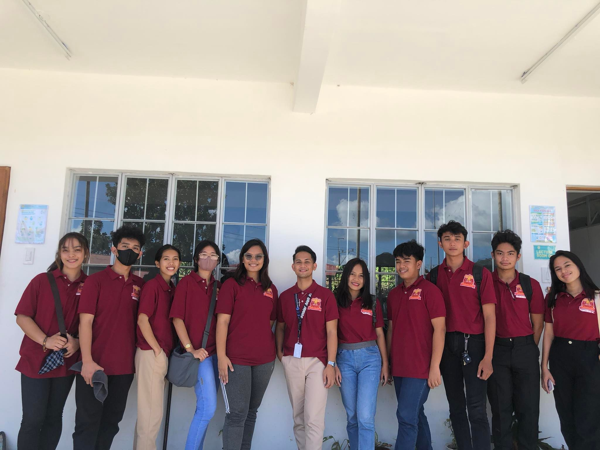
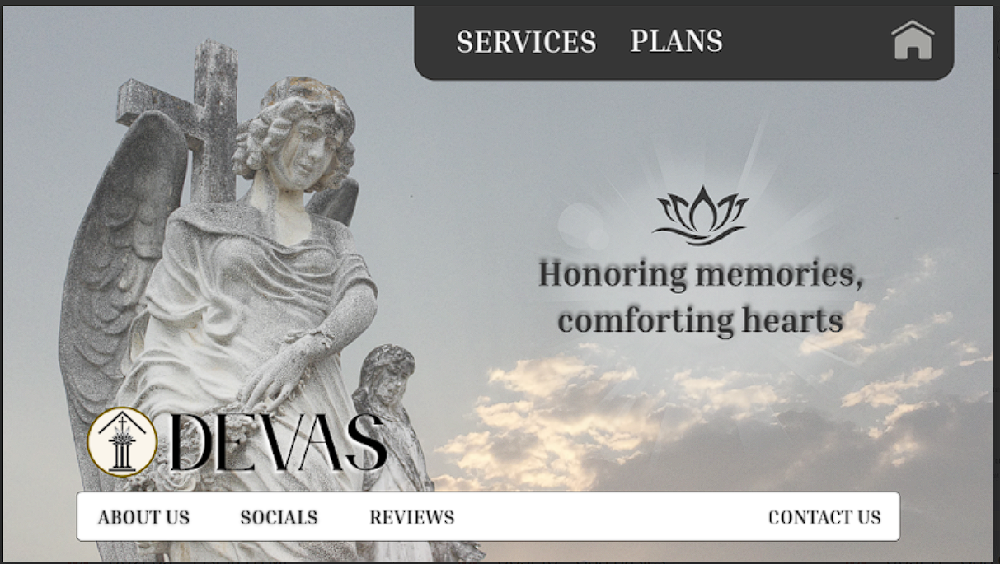

Hover to preview
Served as the Supreme Student Council (SSC) President at Moreh Global Innovative College Inc. from Grade 11 to Grade 12, leading student initiatives, school programs, and community engagement activities.

Hover to preview
Developed a Python terminal-based adventure game titled “Doorway to Hell” as a final programming project in my 2nd year of BSIT. The game features user interaction, ASCII art design, and decision-based gameplay.
View File

Hover to preview
Designed a clean and respectful funeral home website using only HTML and CSS. Focused on creating informative service pages, a structured layout, applying what learn from lectures.
View File